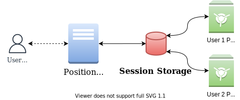
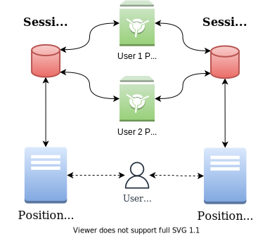
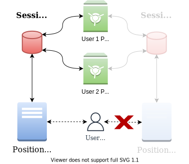

@openhps/solid

@openhps/solid


@openhps/core — API
In a normal positioning system the developer is meant to store the position to a database. This database allows persisting a users location for tracking purposes or aiding the positioning system with historical information. With such a set-up the user is not aware how they are being tracked and what information is stored.

Solid is a specification that lets people store their data securely in decentralized data stores called Pods. Pods are like secure personal web servers for your data. OpenHPS leverages Solid to store DataObjects and ```DataFrame``s that contain private position information and other sensor data. Any data objects belonging to a certain person will be stored in the decentralized Pod owned by that user.

On top of this, Solid supports linked data to offer a semantic storage of the data. OpenHPS can output data that can not only be used by OpenHPS - but also other positioning systems who know the vocabulary.

These two features combined not only offer more awareness for users on how they are being tracked, but it also enables hybrid positioning between multiple (different) positioning systems. Users will be able to deauthenticate themselves from a positioning system through their Pod's access settings. This will revoke any access that the positioning system has over tracking that particular user.

Getting Started
If you have npm installed, start using @openhps/solid with the following command.
npm install @openhps/solid --save
Usage
WebID
@openhps/solid adds a new typed parameter to DataObjects and DataFrames for the WebID of a user.
DataObject
import { DataObject } from '@openhps/core';
const phone = new DataObject("myphone");
phone.webId = "https://maximvdw.solidweb.org/profile/card#me";
The WebID identifies that this object or data frame is owned by a particular user or organization and should be stored in their Pod.
Dataframe
import { DataFrame } from '@openhps/core';
const frame = new DataFrame();
frame.webId = "https://maximvdw.solidweb.org/profile/card#me";
Authentication
Regardless if you are implementing the positioning system on a client or server, the system will be a client for whatever Pod server a user is using. Before information can be modified or created, the user needs to be authenticated.
- Browser to Browser Authentication: The user authenticates through the front-end application. After log in the redirect is handled by the front-end application through the
window.location.hrefURL. The session remains stored on the browser and no server is involved. - Browser to Server Authentication: The user authenticates through the front-end application but the response is captured by a server instead of the front-end application. This allows the server to store multiple sessions.
- Server Authentication: The user authenticates by going to a specific path on the server. They will be prompted to log in after which the server continues the authentication and captures the response from the Pod Issuer.
Node.js
ModelBuilder.create()
.addService(new SolidClientService({
loginPath: "/login",
redirectPath: "/redirect",
redirectUrl: "http://localhost:3030/redirect",
authServer: {
port: 3030
},
loginSuccessCallback: (req: express.Request, res: express.Response, sessionInfo: any) => {
res.send("OK " + JSON.stringify(sessionInfo));
},
loginErrorCallback: (req: express.Request, res: express.Response, sessionInfo: any, reason: any) => {
res.send("error: " + reason);
}
}))
.from()
.to()
.build();
Storage
Data objects and data frames of generic or specific types can be stored using the SolidDataDriver. This driver uses the
SolidDataClient.
ModelBuilder.create()
.addService(new SolidClientService({
/* ... */
}))
.addService(new DataObjectService(new SolidDataDriver(DataObject)))
.addService(new DataFrameService(new SolidDataDriver(DataFrame)))
.from()
.to()
.build();
Contributors
The framework is open source and is mainly developed by PhD Student Maxim Van de Wynckel as part of his research towards Hybrid Positioning and Implicit Human-Computer Interaction under the supervision of Prof. Dr. Beat Signer.
Contributing
Use of OpenHPS, contributions and feedback is highly appreciated. Please read our contributing guidelines for more information.
License
Copyright (C) 2019-2022 Maxim Van de Wynckel & Vrije Universiteit Brussel
Licensed under the Apache License, Version 2.0 (the "License"); you may not use this file except in compliance with the License. You may obtain a copy of the License at
https://www.apache.org/licenses/LICENSE-2.0
Unless required by applicable law or agreed to in writing, software distributed under the License is distributed on an "AS IS" BASIS, WITHOUT WARRANTIES OR CONDITIONS OF ANY KIND, either express or implied. See the License for the specific language governing permissions and limitations under the License.